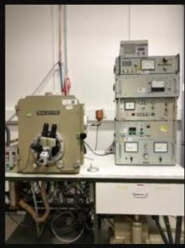
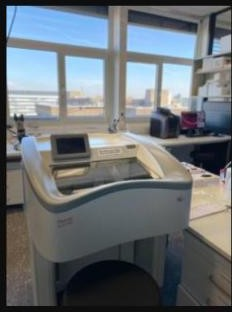
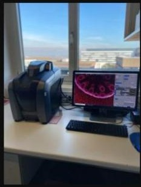
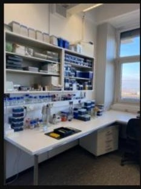
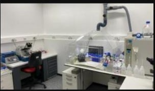
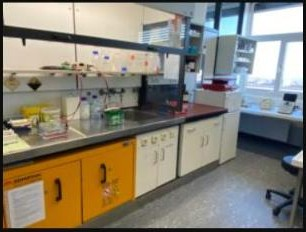

Media
Poster
Bilder, Poster und Videos aus Forschung und Labor.
Bilder

Elektronenmikroskopie-AnlageKryoschnitte

Mikroskopie-Arbeitsplatz
Bildauswertung am MikroskopGefrierätzung

Molekularbiologischer Arbeitsplatz
LaborarbeitsplatzHypoxie-Kammer
RNA-Isolation

Zellkultur-ArbeitsplatzSteriler Arbeitsplatz
Mikroinjektionsanlage
6 von 12 Laborbildern sind bereits mit echten Fotos von der Original-Website hinterlegt; die übrigen sind als Platzhalter markiert und können ergänzt werden.
Poster
01Kinesin in spinal cord of Wobbler Mice – a perspective for ALS research
02Increased ROS level in spinal cord of wobbler mice due to Nmnat2-downregulation
03Induction of degenerative processes in motor neurons of wobbler mice
04ROS-Scavenging-Defects in Motorneurons of Wobbler Mice as a possible Explanation for Oxidative Stress
05Impaired Function of the Cells Powerhouses – New Insights into ALS Research
06Defects in glutathione metabolism contribute to sporadic Amyotrophic Lateral Sclerosis
07Iron Metabolism and Ferroptosis in an Amyotrophic Lateral Sclerosis Mouse Model
Videos
Videomaterial folgt.